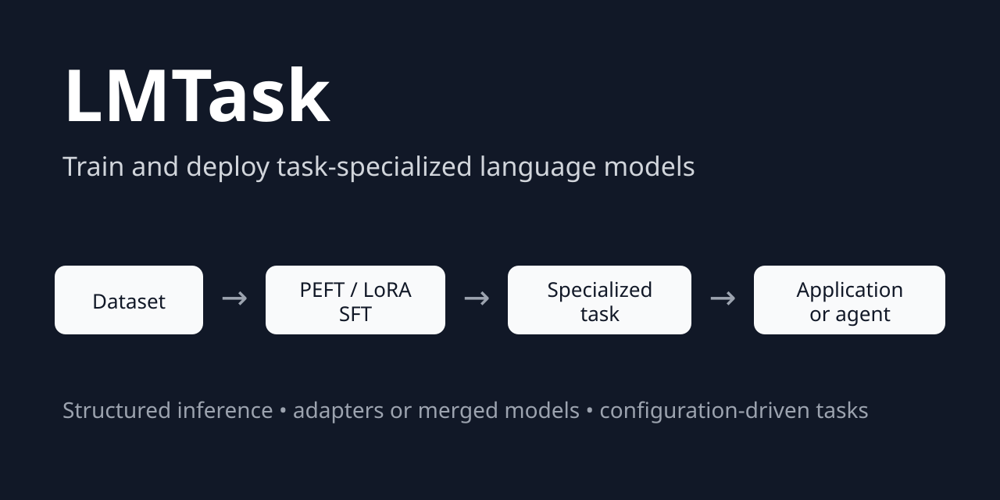

LMTask¶
Train and deploy task-specialized language models with PEFT/LoRA and structured inference.



LMTask turns an existing base or instruction-tuned language model into a reusable, task-specific component. It provides one configuration-driven workflow for preparing datasets, performing parameter-efficient supervised fine-tuning, saving or merging adapters, testing specialized models on held-out datasets, and running structured inference.
Use LMTask to build model-backed classifiers, extractors, taggers, transformers, and generators that can be called directly from Python, the command line, a service, or an agentic workflow.
flowchart LR
A[Source dataset] --> B[Task formatting]
B --> C[PEFT / LoRA SFT]
C --> D[Adapter]
D --> E[Held-out task testing]
E --> F[Predictions / metrics]
D --> G[Structured task inference]
G --> H[Application or agent workflow]
Benchmark snapshot: Gemma 4 specialized on Financial PhraseBank achieves 95.31% accuracy and 94.34% macro-F1 on a 256-example held-out test set. See Benchmarks for the generated report and reproducibility details.
Table of Contents¶
Why LMTask?¶
Low-level libraries such as Transformers, TRL, and PEFT provide the individual training primitives. Agent frameworks primarily orchestrate calls among models and tools. LMTask connects the layer between them: it creates the specialized, model-backed task that an application or agent invokes.
LMTask keeps the complete task lifecycle together:
the task’s training and inference prompt contracts,
dataset loading, preprocessing, and model-specific formatting,
PEFT/LoRA supervised fine-tuning with TRL
SFTTrainer,adapter persistence and optional model merging,
held-out dataset testing through the same task inference path,
configurable task-level scoring and reproducible benchmark reports,
cross-benchmark reporting with automatically generated LaTeX performance tables
prediction export for downstream analysis and reproducibility,
model loading, generation, response cleanup, and caching, and
a stable request/response API for downstream software.
A difficult part of making that lifecycle reliable is model-specific chat formatting. Instruction-tuned models do not all expose the same usable chat template or special-token conventions, and those differences can otherwise leak into dataset preparation, training, testing, and application inference. LMTask centralizes this compatibility work: model resources can define or repair the tokenizer chat template, replace model-specific control tokens where needed, and apply the resulting formatting through the task. This keeps the prompt seen during specialization aligned with the prompt used for held-out testing and deployment instead of requiring each project to rediscover and patch model-specific tokenization behavior.
This makes LMTask a better fit than an orchestration-first framework when the central problem is specializing and deploying the model that performs a particular task. The two approaches are complementary: LMTask supplies a trained capability, while an agent framework decides when to call it.
Capability |
Raw Transformers / TRL |
Agent framework |
LMTask |
|---|---|---|---|
Dataset-to-SFT workflow |
Manual assembly |
No |
Integrated |
PEFT/LoRA training |
Low-level primitives |
No |
Integrated |
Shared train/inference task contract |
Manual |
Usually inference only |
Yes |
Adapter loading and merging |
Manual |
No |
Integrated |
Held-out task-level model testing |
Custom |
Usually custom |
Integrated |
Partial-JSON recovery |
Manual |
Varies |
Built in |
Reusable task request/response API |
Custom |
Tool wrapper |
Built in |
Agent planning and orchestration |
No |
Yes |
Integrates with it |
How LMTask is different¶
LMTask is not primarily a general-purpose fine-tuning launcher or an agent orchestrator. Its central abstraction is a named task whose data preparation, training prompt, inference prompt, model configuration, response handling, and application API remain connected throughout the task lifecycle.
That distinction matters after training. A trained adapter is only an artifact; an LMTask task is an application-ready capability that also knows how to:
format requests consistently with its training data,
load the correct model and adapter,
recover and validate structured responses,
cache repeated requests,
test and score a specialized model over a held-out dataset using the same inference path used by applications, and
expose a stable request/response contract to services and agent tools.
In other words, LMTask focuses on turning model specialization into reusable software, rather than ending the workflow when training produces an adapter.
Features¶
Model specialization¶
Parameter-efficient supervised fine-tuning with PEFT and LoRA. The source model parameters remain frozen during training; LMTask optimizes the adapter parameters.
Hugging Face Transformers and TRL
SFTTrainerintegration.Base-model and instruction-model workflows.
Lightweight adapter output or optional adapter merging for deployment.
Optional 4-bit and 8-bit quantization configuration.
Task definition¶
Configuration-driven classification, extraction, tagging, transformation, and generation tasks.
Separate Jinja templates for training examples and inference requests.
Native tokenizer chat-template integration with model-specific arguments.
Explicit request and response classes for reusable application contracts.
Data preparation¶
Hugging Face datasets, local Arrow/text sources, Pandas data frames,
datasets.Datasetinstances, and Zensols stashes.Declarative preprocessing and postprocessing for mapping, filtering, shuffling, selecting, and renaming fields.
Dataset sampling from the CLI so formatted examples can be inspected before training begins.
Reliable inference¶
Raw-text and machine-readable JSON task responses.
Recovery of usable data from partial JSON when generation reaches a token limit.
Streaming text generation.
Optional SQLite response caching.
Extension points for tokenizer, model, quantization, generation, output cleanup, dataset, and trainer behavior.
Model testing and benchmarking¶
Run a configured specialized model over a held-out Hugging Face
Datasetusing the same task request and generation path used at inference.Preserve gold fields from each test row while adding a configurable prediction column.
Optionally retain raw model output for error analysis.
Limit the number of test examples for smoke tests and development runs.
Export standalone test predictions as CSV or newline-delimited JSON.
Configure task-specific benchmark scoring in
trainconf/*; the included classification scorer reports accuracy, micro/macro/weighted precision, recall and F1, per-class metrics, and invalid-output counts.Generate a machine-readable benchmark record and a rendered Markdown report together with the held-out predictions.
Aggregate results from multiple benchmark configurations into a comparative report and automatically generate LaTeX performance tables (via zensols.datdesc) for papers and other technical reports.
The repository includes task and training configurations for sentiment analysis, named entity recognition, general generation, IMDB specialization, Financial PhraseBank specialization, testing and benchmarking, and TinyStories continuation.
Installation¶
Install the released package from PyPI:
pip install zensols.lmtask
Runtime expectations¶
LMTask’s documented training workflow targets Linux with a CUDA-capable GPU.
The Linux environment also installs bitsandbytes and xformers. Dataset
preparation and some small-model inference may work in other environments, but
memory, quantization, and hardware requirements depend on the selected model.
Always review the upstream model license and access requirements.
Quick start¶
List the configured tasks:
lmtask task
Run sentiment classification:
lmtask instruct sentiment \
'The interface is excellent, but installation was frustrating.'
Run named entity recognition:
lmtask instruct ner 'UIC is in Chicago.'
Example structured output:
model_output_json:
- label: ORG
span: [0, 3]
text: UIC
- label: O
span: [4, 6]
text: is
- label: O
span: [7, 9]
text: in
- label: LOC
span: [10, 15]
text: Chicago
Stream generation from a configured base model:
lmtask stream base_generate 'In a world long, long ago' \
--override=lmtask_model_generate_args.temperature=0.9
Specialize a model with PEFT/LoRA SFT¶
The canonical training example specializes Qwen 3 for IMDB sentiment classification. First inspect the model-formatted dataset:
lmtask -c trainconf/imdb-qwen3.yml sample -m 1
Then train the adapter:
lmtask -c trainconf/imdb-qwen3.yml train
LMTask saves a PEFT adapter and can optionally save a model with that adapter merged into the source checkpoint. The merge changes the exported deployment artifact; it does not mean that the original model weights were directly optimized during training.
See the complete IMDB sentiment tutorial for the configuration lifecycle, outputs, and application integration.
Test and benchmark a specialized model¶
LMTask can run a trained task over a held-out dataset through the same inference
path used by applications. The Financial PhraseBank Gemma 4 configuration in
trainconf/fpb-gemma4.yml demonstrates the complete
workflow with deterministic stratified training, validation, and test
partitions.
To run only held-out inference and write predictions:
lmtask -c trainconf/fpb-gemma4.yml test \
-o fpb-gemma4.jsonl -f json
CSV output is also available with -f csv.
To run the complete benchmark action:
lmtask -c trainconf/fpb-gemma4.yml benchmark
The benchmark action creates the trained model when it does not already exist,
otherwise it reuses the persisted training result. It similarly runs and
persists held-out testing when needed, computes the task-specific metrics
configured by trainconf/*, and renders the benchmark artifacts.
For Financial PhraseBank, the generated data layout is:
data/fpb/gemma4/
├── model/
│ ├── base/
│ │ └── checkpoint-110/
│ │ └── ...
│ ├── peft/
│ │ ├── README.md
│ │ ├── adapter_config.json
│ │ └── adapter_model.safetensors
│ └── result/
│ ├── train-result.dat
│ └── test-result.dat
└── benchmark/
├── fpb_gemma4.jsonl
├── fpb_gemma4.json
└── fpb_gemma4.md
The exact checkpoint files under model/base/ are produced by the underlying
trainer and depend on its checkpoint configuration. model/peft/ contains the
final PEFT adapter, while model/result/train-result.dat persists LMTask’s
training result and statistics.
The benchmark-specific files are created only by the benchmark workflow:
model/result/test-result.dat persists the held-out test result,
benchmark/fpb_gemma4.jsonl contains the row-level gold labels and predictions,
benchmark/fpb_gemma4.json is the machine-readable benchmark record, and
benchmark/fpb_gemma4.md is the rendered human-readable report. Without running
benchmark, the test-result.dat and benchmark/ artifacts are not created.
This keeps training-time validation distinct from final task-level testing. Trainer statistics such as validation loss and token accuracy describe the language-model objective on the validation split; benchmark metrics are computed from predictions on the separate held-out test split.
Compare and report benchmark results¶
Once benchmarks have been run, the report action reads their persisted
results directly from the supplied configuration files and combines them into
one comparative performance table:
lmtask report <config file 1> [, <config file 2> ...]
This reporting step keeps comparative results derived from the same benchmark
records used for evaluation and can automatically generate LaTeX tables for
direct inclusion in papers and technical reports. Pass -b DIR to write the
generated report artifacts beneath a base directory; without -b, the report
is rendered directly.
Python API¶
Specialized models created with LMTask’s reusable training configuration
(trainconf/) are exposed by default as the task named
dataset. The configured task names, including the default dataset task for
specialized models, are available from TaskFactory.task_names. The name
reflects the configuration convention: the task represents the model
specialized on the configured training dataset, while the reusable
task/training machinery remains the same across datasets and models. This is
only a default convention; custom task configurations can register the trained
model under any task name.
Use a configured task directly:
import json
from zensols.lmtask import ApplicationFactory, InstructTaskRequest
factory = ApplicationFactory.get_task_factory()
task = factory.create('sentiment')
request = InstructTaskRequest(
instruction='I love football.\nI hate olives.\nEarth is big.')
response = task.process(request)
print(json.dumps(response.model_output_json, indent=4))
Example result:
[
{"index": 0, "sentence": "I love football.", "label": "+"},
{"index": 1, "sentence": "I hate olives.", "label": "-"},
{"index": 2, "sentence": "Earth is big.", "label": "n"}
]
Use an LMTask task in an agentic workflow¶
An LMTask task is an ordinary Python component. Wrap it as a narrow tool without moving task logic into an agent prompt:
from zensols.lmtask import ApplicationFactory, InstructTaskRequest
factory = ApplicationFactory.get_task_factory()
sentiment_task = factory.create('sentiment')
def classify_sentiment(text: str):
"""Classify one or more statements with the configured model."""
response = sentiment_task.process(
InstructTaskRequest(instruction=text))
return response.model_output_json
The agent or application receives a stable callable capability. LMTask remains
responsible for model loading, task formatting, generation, response recovery,
and caching; the orchestration layer remains responsible for planning and tool
selection. A complete framework-neutral example is available in
examples/agent-tool.
For more detail on the framework internals and task lifecycle, see the configuration, training, and inference documentation. These cover configuration composition and task contracts, PEFT/LoRA specialization and persisted training state, and the shared inference path used by applications and held-out testing.
Dataset configuration¶
The IMDB example loads the source data, creates text labels, renames the input field, shuffles the records, and selects a training subset:
lmtask_dataset_train_source:
# Load the public IMDB review dataset from the Hugging Face Hub.
source: stanfordnlp/imdb
load_args:
# Use the source training split for adapter training.
split: train
pre_process: |-
# Convert the numeric source label into the text expected by the task.
ds = ds.map(lambda x: {
'output': 'positive' if x['label'] == 1 else 'negative'})
# Normalize the review field to the task's input contract.
ds = ds.rename_column('text', 'instruction')
# Make sampling reproducible, then use a small tutorial subset.
ds = ds.shuffle(seed=0)
ds = ds.select(range(1_000))
The associated task then renders each row with its training template and uses a separate inference template after specialization. This minimizes train/serve format skew. Test datasets deliberately leave chat-template formatting to the task so held-out examples follow the same inference path as application requests.
Supported model configurations¶
Family |
Inference configuration |
PEFT training configuration |
Notes |
|---|---|---|---|
Llama 3 |
Yes |
Yes |
Base and instruction-model resources |
Qwen 3 |
Yes |
Yes |
Canonical IMDB example |
DeepSeek-R1-Distill-Qwen |
Yes |
Yes |
Qwen-derived configuration |
Gemma 4 |
Yes |
Yes |
Includes a Transformers 5.5 compatibility patch |
The exact checkpoint, access policy, memory footprint, and license are governed by the upstream model provider.
Documentation¶
Evidence and reproducibility¶
LMTask separates training-time validation from held-out task evaluation.
lmtask benchmark records row-level predictions, configured task metrics,
training/test metadata, Git revision, software versions, and CUDA/GPU
information. Runtime artifacts remain under data/<dataset>/<model>/, while
publishable benchmark records belong under top-level benchmarks/.
See BENCHMARKS.md for current results, reproducibility fields,
and benchmark publication conventions.
Alternatives¶
LMTask overlaps with several strong open-source projects, but they emphasize different parts of the model-specialization lifecycle:
Axolotl is a broad post-training platform with extensive model coverage, distributed training, performance optimizations, preference tuning, reinforcement learning, inference, and adapter merging. Choose it when training breadth, scale, or optimization support is the main concern.
LLaMA-Factory provides broad model and fine-tuning support together with command-line, web, inference, and deployment interfaces. Choose it when model coverage or an integrated training UI is the priority.
Ludwig is a general declarative machine-learning framework that also supports LoRA/QLoRA language-model fine-tuning. Choose it when LLM specialization is one part of a broader tabular, text, or multimodal ML workflow.
TRL and PEFT provide the Hugging Face training primitives used by LMTask. Choose them directly when you need maximum control and are prepared to assemble dataset preparation, task contracts, inference, response handling, and application integration yourself.
Choose LMTask when the desired output is not merely a trained adapter, but a configured, reusable task that carries the same contract from dataset preparation and PEFT training through held-out task testing and scoring, structured inference, and downstream application or agent use.
These projects can also be complementary. For example, a team might use a large-scale training platform for a specialized training regime and use LMTask’s task and inference abstractions to integrate the resulting model into application code.
Community¶
Bug reports, model integrations, task examples, and documentation improvements are welcome. When reporting a model-specific problem, include the checkpoint, quantization configuration, Transformers version, operating system, GPU, and a minimal task configuration. See CONTRIBUTING.md.
If LMTask is useful in your work, starring the repository helps other users find it.
Changelog¶
See the release history.
License¶
Copyright (c) 2024–2026 Paul Landes